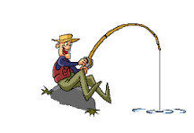

Projects
fishing
This fishing project aims to develop and implement sustainable fishing techniques that maximize catch efficiency while ensuring the conservation of aquatic ecosystems. The project focuses on the use of modern fishing equipment, data-driven strategies, and environmentally friendly practices to promote responsible fishing. The project involves research into various fishing methods, such as traditional line fishing, net fishing, and the use of advanced technologies like sonar detection systems to locate fish populations accurately. Additionally, it emphasizes the importance of selecting appropriate fishing gear to minimize bycatch and protect non-target species, thereby promoting ecological balance.
robotics


This robotic project focuses on designing and developing an autonomous robot capable of performing specific tasks with precision and efficiency. The project involves integrating various technologies such as sensors, microcontrollers, actuators, and artificial intelligence to create a functional robotic system. The robot is designed to navigate its environment using sensors like ultrasonic, infrared, or LiDAR to detect obstacles and make real-time decisions. A microcontroller or microprocessor, such as an Arduino or Raspberry Pi, serves as the brain of the robot, processing sensor data and executing programmed instructions. The robot's movement is controlled through motor drivers and actuators, allowing it to perform actions such as picking and placing objects, avoiding obstacles, or following a predefined path.
coding


This coding project focuses on the development of a software application aimed at solving a specific problem or enhancing user experience through efficient programming techniques. The project involves the use of various programming languages, frameworks, and tools to design, implement, and test the application while ensuring scalability, security, and maintainability. The project begins with thorough planning, including requirement analysis, system design, and choosing the appropriate technology stack, such as Python, JavaScript, or C++. The coding phase involves writing clean, modular, and well-documented code following best practices and design patterns to enhance readability and reusability. Testing and debugging play a crucial role in the project to ensure the software functions correctly and meets user expectations. Various testing methods, such as unit testing, integration testing, and user acceptance testing, are implemented to identify and fix potential issues.